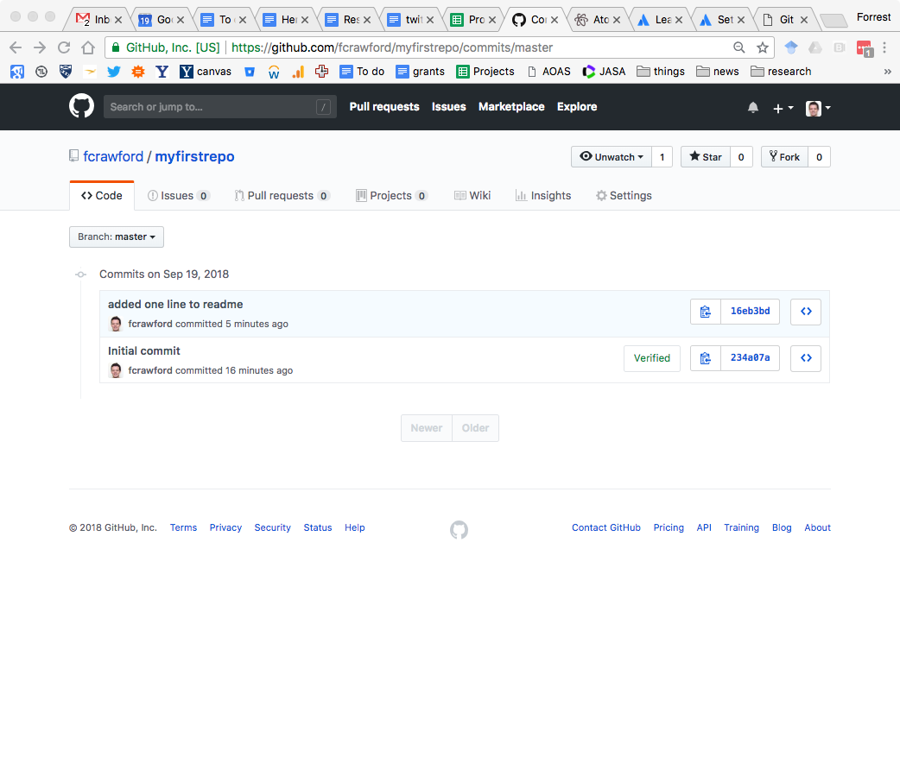

name: inverse layout: true class: center, middle, inverse --- # Git and Github for Collaboration ## Part 1 ### Scientific Research Skills Workshop Series Forrest W. Crawford .footnote[[Source](https://github.com/fcrawford/git-intro)] --- layout: false # Collaboration in research I Most academic researchers use two strategies for collaboration: ### Shared Folders (Dropbox/Box) * Single synced shared folder * Previous versions named by date or stored in a sub-folder called "older versions" * Simultaneous editing results in conflicts * Conflicting files renamed automatically, resolved manually * Cloud-based software keeps track of synced changes and file versions * Restoring older versions possible * No automatic merging of changes * Offline work possible --- # Collaboration in research II ### Online real-time concurrent editing (Google Docs/Overleaf) * Single synced shared file, updated online * Simultaneously/concurrent editing * Previous versions stored online * No versioning or branching * Conflicts cannot arise because two people cannot be working on different versions of the same document * Restoring older versions possible * Offline work either impossible or difficult to merge --- # Problems These strategies can work well for text or rich text documents where there is a single "master" version. However, managing complex projects spread across many files/directories can be very difficult. Things are worse when there are a lot of people contributing to the project. These approaches do not scale, and it can be very difficult to manage conflicts and multiple versions of files. When conflicting versions arise, or someone has introduced an error into the "master" document, it can be difficult to track down the error and fix it without destroying other changes. ### Systems for managing collaboration In the field of software engineering, workers have developed _social and technological solutions_ to the the problem of managing collaborative work. The technological aspect of this system is usually called _version control_. --- # Why version control? Version control helps teams manage and keep track of changes to documents (e.g. source code, text files) over time. For modern collaboration and software development, it is not reasonable to block collaborators from working on the project while one person makes changes to a single file. It is better to let team members work in parallel and to meticulously keep track of each change, and who made that change, at each point in development of the project. Simultaneous editing by different people can introduce conflicts that introduce errors in the document/code, and require painstaking merging of multiple changes. Several version control systems have been developed: > CVS, SVN, Bitkeeper, HG/Mercurial, Git --- # A brief history of version control Early version control systems had a centralized repository that required people to "check out" a file that they wished to work on. That file was "locked" and others could not edit it simultaneously. This system was effective at avoiding conflicting file versions and permitting simultaneous editing of _different_ files, but it was limiting. Later systems used a distributed collaboration model that permitted branching, or having a different version of a file or repository that could be developed independently of the master version. --- # The rise of Git Git was created by Linus Torvalds, the inventor of Linux, in 2005 to manage work by hundreds of developers on the Linux kernel. Git was designed for software development by large teams. But it is useful for many kinds of projects. ### Big ideas * distributed, parallel workflow * every contributor has a full copy of the repository and its history * fast and scalable. Unfortunately Git can be difficult to learn for people unfamiliar with modern software development practices and newcomers to version control. --- # Git philosophy The thing to remember is that scientific collaboration is a social act. A version control system does not replace planning and communication during a project. For academic researchers, Git+GitHub completely solves three problems, and partially solves another: 1. version control 2. offsite backup and syncing between computers 3. data/code sharing post-publication 4. communicating project needs, plans, and changes to team members The fourth one is by far the hardest. --- # Github [Github](http://github.com) is an online platform for hosting Git repositories. In addition to providing offsite storage for Git repositories, Github offers many additional services. * Access control * Issue tracking * Wikis * Pull requests with code review and comments * Markdown rendering * Gists An academic Github account with unlimited public and private repositories is free. --- class: center # GitHub profile page <img src="img/githubprofile.png" width="700px"> --- # First steps: do you have Git? On the UNIX command line, do this: ```bash git --version ``` You should see something like this: ```bash git version 2.15.2 (Apple Git-101.1) ``` If you do not have Git, follow these instructions: https://www.atlassian.com/git/tutorials/install-git Once you have installed Git, do this setup: ```bash git config --global user.name "Forrest Crawford" git config --global user.email "forrest.crawford@yale.edu" ``` --- # Graphical interfaces to Git There are many GUIs for Git: https://git-scm.com/downloads/guis The most popular ones: * [Github Desktop](https://desktop.github.com) * [SourceTree](https://www.sourcetreeapp.com) * [Atom IDE](https://ide.atom.io/) For this tutorial, we will use Git on the command line because: * The commands are the same on any system * No matter how the GUI behaves, you can always interact with Git on the command line * Command line Git is more flexible and powerful * GUI button names are mostly the same as Git command names * I do not use the GUIs --- class: center # GitHub Desktop --- class: center # SourceTree (Atlassian) <img src="img/sourcetree.png" width="700px"> --- # Tutorials in this talk Today I will cover only a small part of the Git workflow, suitable for a single person working alone. 1. Clone a remote repo 2. Create your own local repo 3. Create your own remote repo on Github Later I will give an overview of collaborative workflows using Git. --- # Tutorial I: clone these slides These slides are in a git repository at https://github.com/fcrawford/git-intro. Let's get the repository and inspect it. I like to put my git repos in a directory called `src` ```bash cd ~ mkdir src cd src ``` Get the repo by "cloning" it: ```bash git clone git@github.com:fcrawford/git-intro.git ``` Now inspect the cloned repository. ```bash cd git-intro ``` Look at the files in there: ```bash ls -la ``` --- # Tutorial I: look at the files Let's look at the repo ```bash ls -la ``` ```bash total 48 drwxr-xr-x 7 forrestcrawford staff 224 Sep 19 09:18 ./ drwxr-xr-x 57 forrestcrawford staff 1824 Sep 5 20:07 ../ drwxr-xr-x 17 forrestcrawford staff 544 Sep 19 09:14 .git/ -rw-r--r-- 1 forrestcrawford staff 5 Sep 19 09:14 .gitignore -rw-r--r-- 1 forrestcrawford staff 225 Sep 19 09:14 README.md -rw-r--r-- 1 forrestcrawford staff 12537 Sep 19 09:18 git-intro.html drwxr-xr-x 5 forrestcrawford staff 160 Sep 19 09:10 img/ ``` * `README.md` is a Markdown file containing meta-information and comments * `git-intro.html` is the html/MD file containing the slides * `img/` is a directory containing some images used in these slides * `.gitignore` is a file that tells Git to ignore some files that you don't want to track * `.git` is a hidden directory containing information for Git. --- # Tutorial I: inspect the history Let's see the history of this repo ```bash git log ``` You will see entries that look like this: ```bash commit 253979ebbcd61fc0d65a90e502297d661087efa3 Author: Forrest Crawford <forrest.crawford@gmail.com> Date: Wed Sep 5 22:28:48 2018 -0400 more content ``` The commit ID is a big hexadecimal number that is unique to this commit. You can always reference a commit by the first few digits of its ID. Type `q` to exit the log display. --- # Tutorial I: Status We have not yet made any changes to this repo. ```bash git status ``` ```bash On branch master Your branch is up to date with 'origin/master'. nothing to commit, working tree clean ``` This repo is now on your computer. You can do whatever you want with the contents. You don't own it on GitHub, but you can use it or modify it locally in any way you wish. You can also modify it yourself, then request that I incorporate your changes into the GitHub repo. This is a topic for the next meeting. --- # Tutorial II: Create your own local repo Let's create a new Git repository for you to play with: ```bash cd ~/src mkdir myrepo cd myrepo ls -la ``` Then initialize a git repo in this directory. ```bash git init ``` and see what happened: ```bash ls -la ``` ```bash total 0 drwxr-xr-x 3 forrestcrawford staff 96 Sep 19 09:38 ./ drwxr-xr-x 58 forrestcrawford staff 1856 Sep 19 09:38 ../ drwxr-xr-x 10 forrestcrawford staff 320 Sep 19 09:38 .git/ ``` --- # Tutorial II: Aside: Git vocabulary In Git, a "commit" is the basic unit of "change" to a repository. Git makes several distinctions regarding files and edits to files: * untracked files: files whose changes you do not care about tracking * modified files: tracked files that have changed since the last commit * staged files: files (with changes) added to the set of changes in the next commit * commit: a collection of changes in the repository --- # Tutorial II: create a file Using your favorite text editor, make a new file called `myfile.txt` ```bash pico myfile.txt ``` and add some text to this file. ```bash git status ``` ```bash On branch master No commits yet Untracked files: (use "git add <file>..." to include in what will be committed) myfile.txt nothing added to commit but untracked files present (use "git add" to track) ``` --- # Tutorial II: add the file to the repo Your file `myfile.txt` is not yet part of the git repo. It is "untracked". Let's add/stage the modified file. ```bash git add myfile.txt git status ``` ```bash On branch master No commits yet Changes to be committed: (use "git rm --cached <file>..." to unstage) new file: myfile.txt ``` --- # Tutorial II: commit the changes Although your file is now being tracked by this Git repository, it is still not part of the project. You need to "commit" the file. ```bash git commit -m "added the first file" ``` ```bash [master (root-commit) d9dbdc8] added the first file 1 file changed, 1 insertion(+) create mode 100644 myfile.txt ``` The commit message tells others what you changed. Now look at the status ```bash git status ``` ```bash On branch master nothing to commit, working tree clean ``` --- # Tutorial II: look at the log ```bash git log ``` ```bash commit d9dbdc8c3dce5f3ab075bb26bde2b819e49d6982 (HEAD -> master) Author: Forrest Crawford <forrest.crawford@gmail.com> Date: Wed Sep 19 09:46:30 2018 -0400 added the first file ``` --- # Tutorial II: Looking at previous versions ```bash git checkout d9dbdc8 ``` ```bash git checkout master ``` --- # Tutorial II: Undoing changes Let's make a change that we will undo. Open `README.md` and add a new line, then commit the change ```bash git commit -am "made a bad change" git log ``` ```bash commit a6d8a88d68437fd866e3dbbe4a03867eca952986 (HEAD -> master) Author: Forrest Crawford <forrest.crawford@gmail.com> Date: Wed Sep 19 10:40:40 2018 -0400 made a bad change ``` Now suppose you want to "undo" this commit. ```bash git revert HEAD ``` where `HEAD` is a symbol that points to the most recent commit. If you are in vi, type `:x` to save the commit message. --- # Tutorial II: looking at the revert commit ```bash git log ``` ```bash commit c1a7e8ec0d79b303b84b84d9c5f14c055787e95e (HEAD -> master) Author: Forrest Crawford <forrest.crawford@gmail.com> Date: Wed Sep 19 10:41:35 2018 -0400 Revert "made a bad change" This reverts commit a6d8a88d68437fd866e3dbbe4a03867eca952986. commit a6d8a88d68437fd866e3dbbe4a03867eca952986 Author: Forrest Crawford <forrest.crawford@gmail.com> Date: Wed Sep 19 10:40:40 2018 -0400 made a bad change ``` Now if you open the `README.md` file, you will see that your last change is gone. --- # Tutorial III: Make your own remote repo Go to your github profile page, click "Repositories", then "New" <img src="img/myrepos.png" width="500px"> --- # Tutorial III: Give your repo a name Create a new repo called "myfirstrepo". You can make it "private" if you wish. Check "Initialize this repository with a README" Click "Create Repository" --- # Tutorial III: Look at your new repo You will see your new repo on Github --- # Tutorial III: clone your new repo Click "Clone or Download" and copy the text. Then go to the UNIX command line and type ```bash cd ~/src git clone git@github.com:fcrawford/myfirstrepo.git ``` ```bash Cloning into 'myfirstrepo'... remote: Counting objects: 3, done. remote: Total 3 (delta 0), reused 0 (delta 0), pack-reused 0 Receiving objects: 100% (3/3), done. ``` Now look at it ```bash ls -la ``` ```bash total 8 drwxr-xr-x 4 forrestcrawford staff 128 Sep 19 10:08 ./ drwxr-xr-x 59 forrestcrawford staff 1888 Sep 19 10:08 ../ drwxr-xr-x 13 forrestcrawford staff 416 Sep 19 10:08 .git/ -rw-r--r-- 1 forrestcrawford staff 13 Sep 19 10:08 README.md ``` --- # Tutorial III: Make a change and commit it You have not yet changed anything: do `git status` to make sure. Open `README.md` in a text editor, make a change, and save the file. ```bash git status ``` ```bash On branch master Your branch is up to date with 'origin/master'. Changes not staged for commit: (use "git add <file>..." to update what will be committed) (use "git checkout -- <file>..." to discard changes in working directory) modified: README.md no changes added to commit (use "git add" and/or "git commit -a") ``` Now stage the file and commit the change ```bash git add README.md git commit -m "added one line to readme" ``` --- # Tutorial III: see the new state of the repo ```bash git status ``` ```bash On branch master Your branch is ahead of 'origin/master' by 1 commit. (use "git push" to publish your local commits) nothing to commit, working tree clean ``` --- # Tutorial III: push your changes to the remote repo (GitHub) First, let's see what the remote repo is ```bash git remote -v ``` ```bash origin git@github.com:fcrawford/myfirstrepo.git (fetch) origin git@github.com:fcrawford/myfirstrepo.git (push) ``` So you are going to "push" your changes to the remote host on GitHub ```bash git push ``` ```bash Counting objects: 3, done. Writing objects: 100% (3/3), 275 bytes | 275.00 KiB/s, done. Total 3 (delta 0), reused 0 (delta 0) To github.com:fcrawford/myfirstrepo.git 234a07a..16eb3bd master -> master ``` --- # Tutorial III: look at your changes online You can see the last commit message to the `README.md`. --- # Tutorial III: look at your changes online Click "2 Commits", then click on the hash value for the most recent commit.  --- # Tutorial III: look at your changes online --- # Best practices (when working alone) Never commit private or confidential information to a Git repo. It is very difficult to remove completely. If you accidentally do this, talk to Forrest. Make small, frequent commits with expressive messages Git diffs are line-based, so make lines small. break up code into several files. Every day, list the things you want to do, and separate them conceptually into discrete tasks. Your goal is to make each of these separate commits. Don't leave uncommitted changes at the end of the day. Push everything to remote. Never add auxiliary files to a repo. Use the `.gitignore` file to manage other files. --- # Special consideration ### LaTeX files: * break up files * small lines, or line break after every sentence. This can be annoying. * never add/commit `aux`, `log`, `out`, `bbl`, `blg`, `pdf` (unless image) files to the repo. Only what is necessary to compile. * use a Makefile to compile your document ### R packages * The repo _is_ the package. * The `README` file is descriptive * Don't commit auto-generated files. --- # Collaborating with others This is the topic of the next skills workshop. Getting familiar with using Git on your own is a pre-requisite to using Git with a team. --- # Further resources [Pro Git](https://git-scm.com/book/en/v2) [Videos](https://git-scm.com/videos) [Official tutorial](https://git-scm.com/docs/gittutorial) [Git Immersion](http://gitimmersion.com/) [Git Every Day](https://git-scm.com/docs/giteveryday) [Atlassian Tutorials](https://www.atlassian.com/git) Google your Git problems. You are not the first one to have a Git problem. If that fails, ask someone!